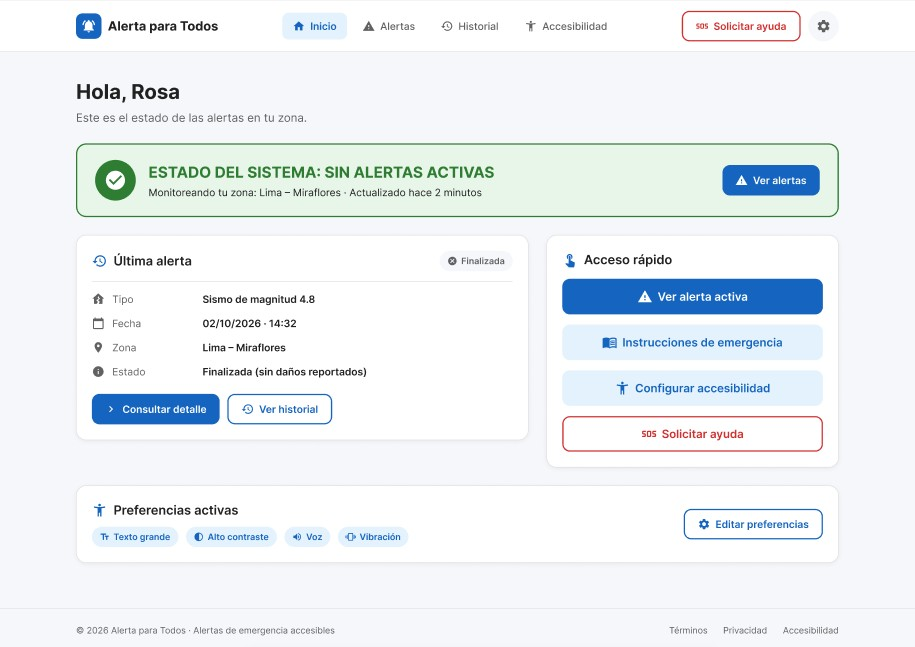
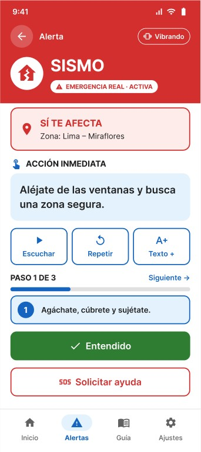
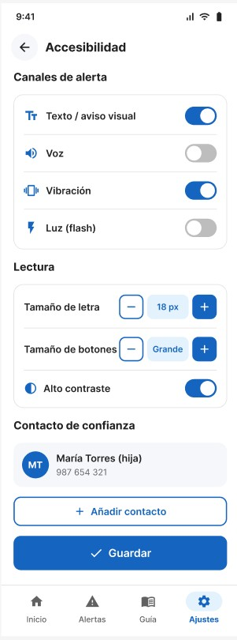
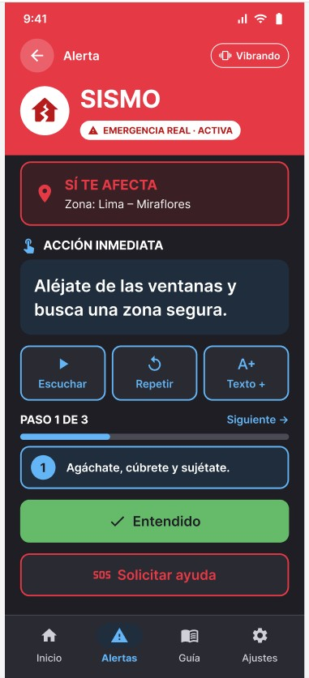

Nuestra misión
Brindar a las personas con discapacidad auditiva, visual y a los adultos mayores una forma accesible de recibir alertas de emergencia, para que entiendan qué pasa y actúen de forma rápida y segura.
Sistema adaptable de emergencias
Recibir una alerta no es suficiente, también hay que entender qué pasa y qué hacer. Alerta para Todos adapta las alertas de emergencia para personas con discapacidad auditiva, visual y adultos mayores.
Probar mi alerta Ver video y guíaProyecto académico: es una simulación y no envía alertas reales.

Quiénes somos
Somos estudiantes de la UPC del curso HCI for UX Design. Diseñamos un sistema adaptable de emergencias para personas con discapacidad auditiva, visual y adultos mayores.
Brindar a las personas con discapacidad auditiva, visual y a los adultos mayores una forma accesible de recibir alertas de emergencia, para que entiendan qué pasa y actúen de forma rápida y segura.
Ser al 2030 una propuesta de referencia en el Perú en comunicación accesible de emergencias.
Cómo adaptamos la alerta
Para personas sordas o con dificultad para escuchar.
Para personas ciegas o con baja visión.
Primero se muestra qué pasa y qué hacer, sin mucho texto.
HU-01 · Configurar preferencias de accesibilidad auditiva
Elige un perfil y mira cómo cambia la alerta de sismo y los canales con que te llega.
Es una simulación, no envía alertas reales. El perfil elegido no se transfiere al formulario.
HU-019 · Escuchar instrucciones paso a paso
La alerta se lee por voz, un paso por vez. Elige el paso para ver lo que se escucharía.
Simulación: no se reproduce audio real.
HU-025 · Aumentar tamaño de letra desde la alerta
Elige un tamaño y mira cómo cambia el mensaje de la alerta.
Simulación: el tamaño elegido se recuerda solo en este navegador.
HU-038 · Confirmar comprensión con un botón simple
Después de leer la alerta, un solo botón confirma que entendiste qué hacer.
Aléjate de las ventanas y ve a la zona segura.
Aún no confirmaste. Si no confirmas, se avisaría a tu contacto de confianza.
✔ Confirmaste que entendiste la alerta. Gracias.
Simulación: no se envía ningún aviso. Vuelve a pulsar el botón para reiniciar.
HU-047 · Consultar la última alerta desde el inicio
Desde el inicio se ve la última alerta recibida. Ábrela para ver los detalles.
Datos ficticios para la demostración.
HU-011 · Registrar un contacto de confianza
Si no confirmas una alerta, le avisamos a esta persona. Completa datos ficticios para probar el recorrido.
Esta práctica no guarda datos ni envía mensajes. No ingreses información personal real.
Recorrido del usuario
El aviso aparece primero con el motivo: qué pasa y si es una emergencia real o un simulacro.
La acción inmediata se muestra en texto simple, con iconos y, si el usuario lo prefiere, en voz.
El usuario confirma que comprendió. Si no lo hace, se avisa a su contacto de confianza.
Pantallas del prototipo diseñado en Figma.



“Con el aviso en pantalla completa supe qué hacer sin tener que preguntarle a nadie.”
Relato ficticio para representar la necesidad del usuario.